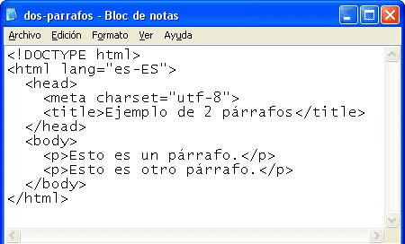
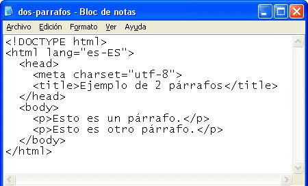

(HTML HyperText Markup Language)
Es el lenguaje estándar que se utiliza para crear y estructurar páginas web. Funciona mediante el uso de etiquetas que indican al navegador cómo debe mostrar cada elemento, como textos, imágenes, enlaces, encabezados o tablas. Gracias a HTML, es posible dar forma al contenido y establecer la base sobre la cual se aplican estilos y funciones que completan la experiencia visual e interactiva de un sitio web.

Principales características
Es un lenguaje de marcado, no de programación.
Utiliza etiquetas para definir la estructura del contenido.
Es fácil de aprender y usar, ideal para principiantes.
Funciona en conjunto con CSS y JavaScript para crear sitios completos.
Es compatible con todos los navegadores web.
Permite integrar multimedia, formularios y enlaces.
Está en constante actualización a través de estándares como HTML5.
 
